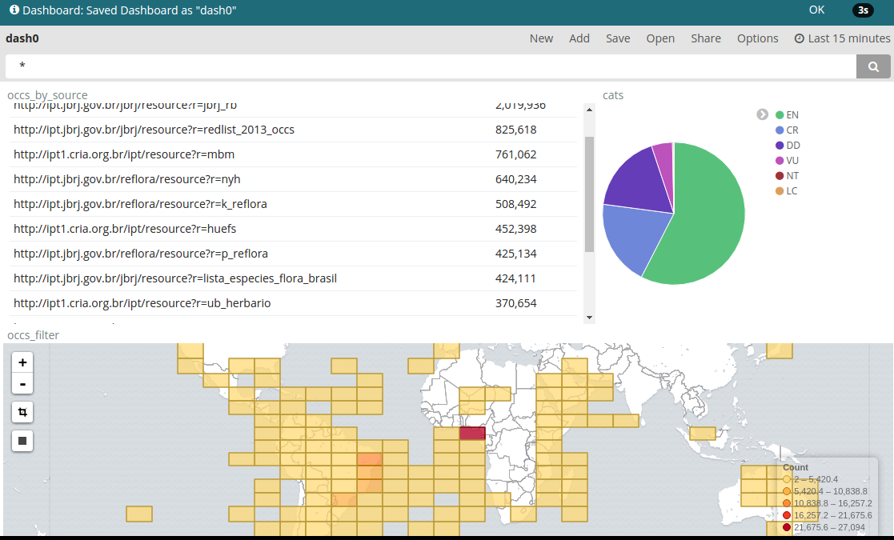

Elasticsearch & Kibana
Indexando e explorando dados
Elasticsearch
You know, for search!
Elasticsearch
- Busca e análises
- HTTP+JSON
- Distribuído
- Suporte e comunidade
Elasticsearch
Começamos criando um índice para o projeto
PUT /armax
Elasticsearch
Indexamos dados por tipo
PUT /armax/arma/wolverine
{
"nome":"wolverine"
,"numero":10
,"poderes":["regeneração","adamantium"]
,"ativo":false
}
PUT /armax/arma/deadpool
{
"nome":"deadpool"
,"numero":8
,"poderes":["regeneração"]
,"responsavel":"Ajax"
}
Elasticsearch
Diferentes tipos
POST /armax/mortes
{
"arma":"wolverine"
,"data":"2017-01-01"
,"pais":"BR"
}
POST /armax/mortes
{
"arma":"deadpool"
,"data":"2017-01-02"
,"pais":"US"
}
Elasticsearch
Schema dinâmico
GET /armax
{
"armax": {
"mappings":{
"arma": {
"properties": {
"nome": {"type":"text"}
,"responsável":{"type":"text"}
,"poderes": {"type":"text"}
,"numero":{"type":"integer"}
,"ativo":{"type":"boolean"}
}
}
,"morte": {
"properties": {
"arma": {"type":"text"}
,"data":{"type":"text"}
,"pais":{"type":"text"}
}
}
}
}
}
Elasticsearch
Schema pode ser definido
PUT /armax/morte/_mapping
{
"properties": {
"arma": {"type":"text"}
,"data":{"type":"date"}
,"pais":{"type":"text"}
,"location": {
"type":"geo_point"
}
}
}
Elasticsearch
E podemos buscar de forma simples
GET /armax/arma/_search?q=wolverine
GET /armax/arma/_search?q=wolv*
GET /armax/arma/_search?q=ativo:true
GET /armax/_search?q=wolverine
Elasticsearch
E podemos buscar de forma completa
POST /armax/morte/_search
{
"fields":["arma"]
,"sort":["data"]
,"query":{
"bool":{
"must": {
"geo_bounding_box":
"location": {
"top_left": { "lat": 42, "lon": -72 },
"bottom_right": { "lat": 40, "lon": -74 }}}
,"must": {
"range": {
"data":{"gte":"2016-02-17","lt":"2017"} } }
}
}
}
Elasticsearch
Agregar dados também
POST /armax/morte/_search
{
"aggs": {
"mortes_por_arma":{
"terms": {
{"field": "arma"}
}
}
}
}
Elasticsearch
Agregar dados também
POST /armax/morte/_search
{
"aggs": {
"mortes_por_arma_por_dia":{
"date_histogram" : {
"field" : "date", "interval" : "month"
}
,"aggs": {
"armas": { "terms": {"field": "arma"} }
}
}
}
}
Kibana
Visualize and Explore
Kibana
Kibana
Kibana
Detalhar a buscar

Kibana
Console
Kibana
Testar agregações de dados
Kibana
Mapas
Kibana
Combinar tudo em um dashboard
Kibana
Compartilhar
Rapid Risk Assessment Application
Avalação do risco de extinção
da flora do Brasil
Jardim Botânico do Rio de Janeiro
Dados de biodiversidade
- Coletar dados
- Normalizar os dados
- Analisar
- Visualizar
Dados de biodiversidade
Taxonomia
Classicação e nome de espécie
- Nomes de espécies
- Sinônimos desses nomes
- Agrupados por família
Dados de biodiversidade
Taxonomia
Fabaceae Vicea faba
{
"family":"Fabaceae"
,"genus":"vicea"
,"specificEpithet":"faba"
,"taxonomicStatus":"accepted"
}
Dados de biodiversidade
Taxonomia
Fabaceae Vicea alba
{
"family":"Fabaceae"
,"genus":"vicea"
,"specificEpithet":"alba"
,"taxonomicStatus":"synonym"
,"acceptedName":"Vicea faba"
}
Dados de biodiversidade
Taxonomia
/elasticsearch/dwc/taxon/_mapping
25 campos
Dados de biodiversidade
Ocorrência
Amostra da espécie na natureza
- Nome da espécie
- Localidade
- Data
- Diversos descritores de qualidade
Dados de biodiversidade
Ocorrência
/elasticsearch/dwc/occurrence/_mapping
~60 campos
Dados de biodiversidade
Avaliação
- Agregações por: novos, antigos ou todos
- Contagem
- Área total ocupada
- Clusters de ocupação
Dados de biodiversidade
Avaliação
/elasticsearch/dwc/analysis/_mapping
~120 campos
Dados de biodiversidade
Dados de biodiversidade
Dados de biodiversidade
Números
- 50k nomes
- 18M ocorrências
- 10 Análise por nome (500k análises)
- Diariamente refeito
Infra e Tech
- Um VPS
- 4 núcleos
- 8GB de RAM
- ES com 4GB
- ~3k linhas de Clojure
- 6 containers docker